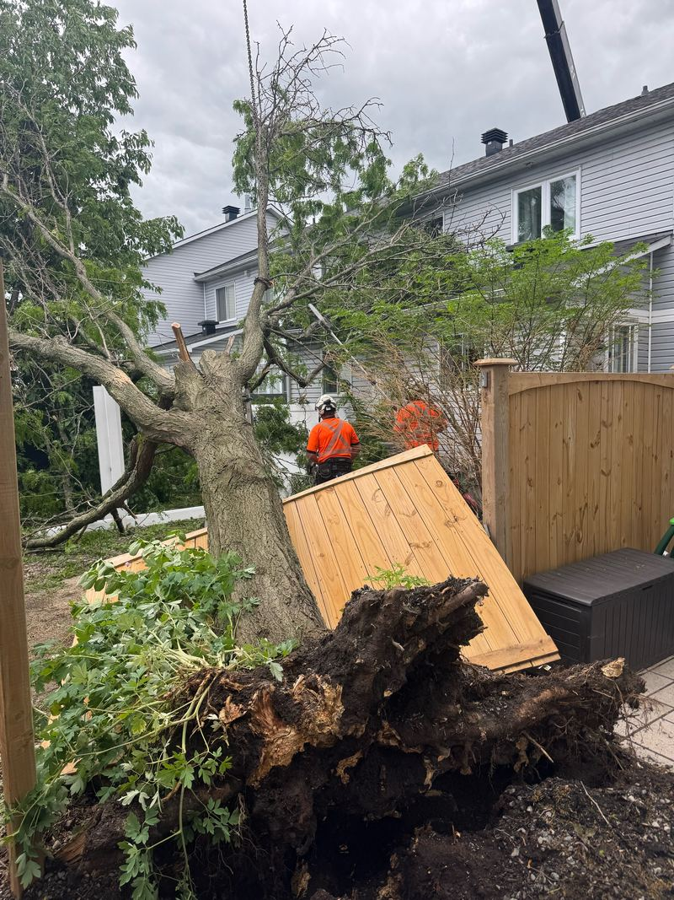

If a tree comes down in a storm, get everyone away from it, treat every wire as live and call Hydro Ottawa if a line is touched or sagging. Then photograph the damage and call a tree crew for anything on a house, car or fence or blocking your driveway. Do not cut it yourself. Bisson Services has 24-hour emergency service, so call 613-558-4806 or see tree cutting and removal.

Take wide and close photos from several angles before anything is moved: the tree, its base, the ground around it and any damage to the house, fence, car or shed. Call your insurer early and ask whether they need to see the damage before work starts. Keep every receipt. We cannot say what a policy covers.
Call now: a tree on or against a building, anything touching a wire, a tree blocking your driveway or the road, a trunk that is cracked or splitting, a fresh lean with soil lifting, or a limb hung up over a house or play area.
Can wait for an appointment: small branches on the lawn, a tree that was already dead and has shed some bark, and cleanup of leaves and twigs.
A fallen or half-fallen tree is under tension from its own weight, the root plate that is still partly attached and whatever it rests on. None of that is visible, and it releases fast when cut. Storm injuries often happen to people working alone with a chainsaw or a ladder. Leave anything leaning, hung up or under load to a crew.
A tree on the City boulevard or in a park belongs to the City of Ottawa: report it to 3-1-1. For your own tree, Ottawa's Tree Protection By-law allows removal without a permit when a tree is an immediate threat to public health and safety. The City asks you to photograph it first. Our guide to the tree removal permit rules has the details.
On an emergency call the aim is usually to make the hazard safe and get access open first, then finish the cleanup. Bisson Services provides 24-hour emergency service for dead, dying and dangerous trees across Ottawa and Prescott-Russell. If other trees on the property worry you after the storm, read how to tell if a tree is dangerous, or ask for a free estimate on tree removal or pruning.
Get everyone away from the tree, stay clear of any wires and call Hydro Ottawa if a line is touched or sagging. Then photograph the damage and call a tree crew.
We advise against it. Fallen and partly fallen trees are under hidden tension and can move suddenly when cut. Call a crew.
Hydro Ottawa. Stay well back and treat any downed line as live.
Yes. Bisson Services offers 24-hour emergency service for dead, dying and dangerous trees across Ottawa and Prescott-Russell. Call 613-558-4806.
A tree that is an immediate threat to public health and safety does not need a permit; photograph it first. See our permit guide for the rest.
Free on-site estimates, bilingual service, 24-hour emergency response. Bisson aims to reply the same day.